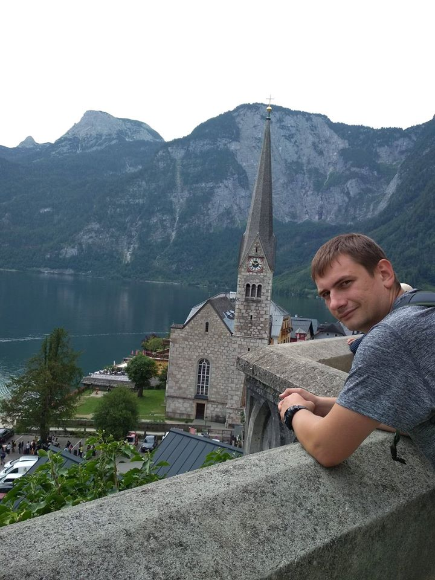
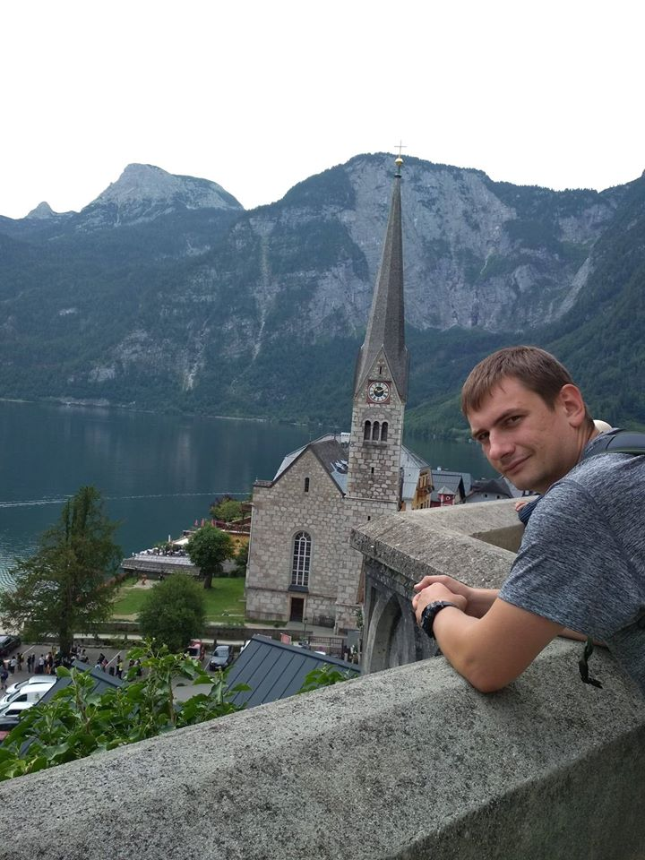

В главных ролях
- Роберт Паттинсон
- Зои Кравиц
- Колин Фаррелл
- Питер Сарсгаард
- Пол Дано
- Энди Серкис
- Джеффри Райт
- Джон Туртурро
- Макс Карвер
- Кон О’Нилл
Тут скоро появлятся рецензии
Премьера в США: 25 июня 2021 г.
Премьера в Украине: 24 июля 2021 г.
Bruce Wayne / Batman

Родился Роберт в Лондоне 13 мая 1986 года. Кроме него в семье воспитывалось еще два ребенка. Его мать работала в модельном агентстве, что, возможно, повлияло на биографию Роберта Паттинсона. В двенадцатилетнем возрасте занялся модельной карьерой. В том же возрасте сыграл небольшую роль в театре и по неизвестным широкой публике причинам был выгнан из школы. В то время Роберт был долговязым и не отличался развитой мускулатурой, но был очень востребован как модель. Через несколько лет внешность актера стала более мужественной, но, не смотря на это, модельная карьера пошла на убыль. Уже став знаменитым актером, в 2007 году Роберт принял участие в показе мод «Hackett’s». Актер обладает выразительной и необычной внешностью. На всех фото в биографии Роберта Паттинсона самым эпатажным, привлекающим внимание элементом является его взъерошенная прическа. Значительно повысить актерский уровень Роберту удалось в 15 лет, когда его пригласили в театр Барнса (Barnes Theatre Club). Там он играл в постановках: «Macbeth», «Anything Goes», «Tess of the D’Urbevilles». Первую роль в кино Паттинсон сыграл в 2004 году (роль второго плана в фильме «Кольцо Нибелунгов»). Тогда же снялся в фильме «Ярмарка тщеславия». Широкую популярность получил после роли Седрика Диггори в ленте «Гарри Поттер и Кубок Огня». Актерским прорывом в биографии актера Роберта Паттинсона стал фильм «Сумерки» по книге Стефани Майер. В фильме Роберт играет Эдварда Каллена – вампира, который влюбляется в обычную девушку Беллу (Кристен Стюарт). Роберт снялся также в следующих фильмах по романам Майер «Новолуние», «Затмение», «Рассвет». Отличные актерские данные позволяют Роберту с успехом справляться с абсолютно разноплановыми ролями. Так актер превосходно сыграл Сальвадора Дали в независимой ленте «Мелкие останки». Среди других работ Роберта фильмы: «Преследователь Тоби Джагга», «Справочник плохой матери», «Как быть» (за роль получил звание лучшего актера на Страсбургском кинофестивале в 2008), «Летний домик». Пока что в полной биографии Роберта Паттинсона насчитывается не слишком много ролей. Но учитывая, что актерская карьера Роберта началась недавно, его статус звезды – большое достижение. Также Роберт увлекается музыкой: играет на синтезаторе, гитаре, поет, является участником группы «Bad Girls». Роберт исполнил две песни к фильму «Сумерки»: «Never Think» (написана Робертом в соавторстве с Сэмом Брэдли), «Let Me Sign». В 2008 году возглавил рейтинг самых привлекательных мужчин по версии журнала «People», а в 2009 – по версии «Glamour».
Alfred Pennyworth
Родился 20 апреля 1964 года в Лондоне. Его отец был врачом, а мать работала учителем в школе для отсталых детей. С раннего детства Энди увлекался живописью и хотел стать художником, однако, окончив школу и поступив в Ланкастерский университет, он начал проявлять интерес к театру и вскоре стал играть в ланкастерском театре «Дюкс». Театральная карьера Серкиса активно развивалась, и в последующие годы он играл на сценах многих известных театров, исполняя ключевые роли в таких постановках, как «Король Лир», «Отелло», «Сон в летнюю ночь», «Макбет» и «Фауст». В 1994-м году Энди дебютировал и в кино, сыграв в фильме «Принц Ютландии». Затем он отметился в картинах «Оливер Твист», «Арабские приключения», «Карьеристки», «Среди гигантов», «Пандемониум», «Билли-Фингал», «Мститель». Но наиболее заметной ролью того периода стала работа над лентой «Властелин колец», где он помогал создавать компьютерного персонажа Голлума. Ради этой роли Серкису пришлось играть в специальном костюме, оснащенном множеством датчиков. Другими успешными фильмами с его участием стали триллер «Проклятые», блокбастер «Кинг Конг», вышедший в 2005-м году, в котором Энди, вновь используя компьютерные технологии, сыграл самого Кинг Конга. В 2006-м году свет увидела картина «Престиж», которая была хорошо принята зрителями, после чего Серкис сыграл в фильмах «Сила искусства» и «Громобой». Еще большая известность пришла к Энди после выхода в 2007-м году телевизионного фильма «Лонгфорд», за исполнение роли в котором он был номинирован на премию «Золотой глобус». А в 2008-м году он сыграл самого Альберта Эйнштейна в телефильме «Эйнштейн и Эддингтон». В том же году вышла картина «Чернильное сердце», а чуть позднее «Секс, наркотики и рок-н-ролл». Среди последних работ актера можно отметить ленты «Восстание планеты обезьян» и «Смерть супергероя», кроме того он озвучил персонажей в мультфильмах «Озвучка Приключения Тинтина: Тайна Единорога» и «Секретная служба Санта-Клауса». В настоящее время Серкис участвует в съемках фильма «Хоббит».
Тут скоро появлятся Награды
Тут скоро появлятся Факты
Тут скоро появлятся Сайты
Предстоящий американский супергеройский фильм, основанный на одноимённых комиксах издательства DC Comics. Картина будет выпущена компанией Warner Bros. и будет перезагрузкой всех фильмов о Бэтмене.
Предстоящий американский супергеройский фильм, основанный на одноимённых комиксах издательства DC Comics. Картина будет выпущена компанией Warner Bros. и будет перезагрузкой всех фильмов о Бэтмене.
Разработка
В октябре 2014 года студия Warner Bros. объявила, что в разработке находится сольный фильм о Бэтмене, роль которого вновь исполнит Бен Аффлек. В июле 2015 года сообщалось, что Аффлек ведёт переговоры со студией по поводу постановки фильма и совместного написания сценария с Джеффом Джонсом.
После выхода фильма «Бэтмен против Супермена: На заре справедливости» руководитель агентства WME Патрик Уайтсел подтвердил, что Аффлек написал сценарий для сольного фильма о Бэтмене и в настоящий момент его рассматривают студия и DC. В мае 2016 года Джереми Айронс подтвердил, что он появится в фильме про Тёмного Рыцаря.
На Comic-Con в Сан-Диего в июле 2016 года было официально подтверждено, что Аффлек станет режиссёром картины. В августе 2016 года на одной из страниц Аффлека в социальных сетях был опубликован тестовый материал, в котором был показан персонаж Детстроук. 8 сентября 2016 года Джефф Джонс подтвердил, что Джо Манганьелло сыграет наёмника Слейда Уилсона, который, возможно, станет главным злодеем фильма.
Подпишитесь на обновления